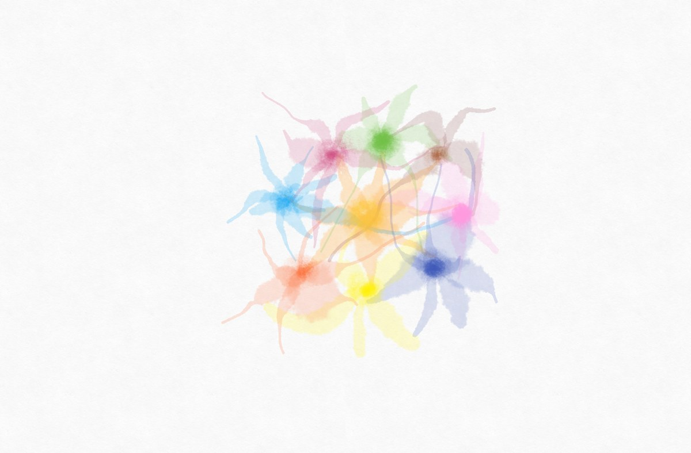
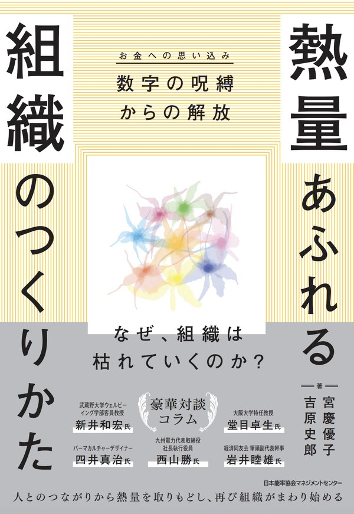

JUNKAN-AIDA ／ 文章で愉しむ ／ 書籍
熱量あふれる組織のつくりかた
数字の呪縛（お金への思い込み）からの解放

わたし達一人ひとりが興味や関心、好奇心を持っていることに熱中しているとき、あっという間に時間は過ぎていく。
このとき、時間はわたし達の中に溶け込んでいる。
逆の場合はどうだろうか。興味のないことが早く終わらないかと思い、時間を気にしているのではないだろうか。このとき、わたし達は時間の中に閉じ込められている。
子どもの頃を思い出してみる。「泥団子づくり」「鬼ごっこ」「だるまさんがころんだ」。遊び過ぎて飽きたら、ルールを変えて、また遊び続けていた。
わたし達はルールの中に閉じ込められてはいなかった。ルールはわたし達の中に溶け込んでいた。
大人になったわたし達はどうだろうか。
知らず知らずのうちに、何に閉じ込められているのだろうか。
なぜ、組織は
枯れていくのか？
人とのつながりから熱量を取りもどし、
再び組織がまわりはじめる。
給料は上がった。制度も整えた。
それでも、日曜の夜になると、身体が鉛のように重くなる——。
背景にあるのは、わたし達が無自覚に信じている「過剰なマネーバイアス（お金への思い込み）」です。数値という結果を、人生の熱量や人とのつながりよりも優先し続けた結果、組織から「目に見えないもの」が失われていく。
本書は、その呪縛からの解放を探る一冊です。人とのつながりから、「人生の熱量」を取りもどすために。
PERSPECTIVE
本書の核となる視点
本書は、4つの視点を絡め合わせながら、「熱量あふれる組織」の姿を立体的に描いていきます。
PILLAR 01
過剰なマネーバイアス
（お金への思い込み）からの解放
収益性・生産性・効率性などの経営指標。お金を絶対的な軸のように扱う「過剰なマネーバイアス」が、組織から「人生の熱量」と「人とのつながり」を奪っていく。その正体を、貨幣錯覚の歴史（ヒューム、スミス、ケインズ）からも紐解く。
PILLAR 02
「人生の熱量」と「人とのつながり」
興味・関心・好奇心、遊び心、童心、喜びから湧きあがる「人生の熱量」は、「人とのつながり」から自ずと生まれる。「おかねもち」から「おつながりもち」へ。
PILLAR 03
3つの風穴 ＋ ヘテラルキー
熱量あふれる組織に自ずと生まれてくる「3つの風穴」——「人生の熱量」が湧きあがる場や機会／「人生の熱量」が組織に織り込まれていく営み／「人生の熱量」がめぐり続ける学びの姿勢。そして役職階層と異なる軸が共存する「ヘテラルキー」へ。
PILLAR 04
「ライフでワークを包む」
→ 生成の組織論
仕事（ワーク）で人生（ライフ）を包むのではなく、人生（ライフ）で仕事（ワーク）を包む。「人生の熱量」が連鎖し共鳴する「熱量フィールド」、そして「存在の組織」を内包する「生成の組織論（Becoming）」という新たな実践知へ。
CONTENTS
本書の内容（はじめに・全6章・おわりに）
INTRODUCTION
はじめに
わたし達は何に閉じ込められているのか。解放の鍵は何か。生命体的な組織を志向する際の構造的な矛盾と、「人生の熱量」に主眼を置きながら財務的な持続性を共存させるという本書の視点を語る。
CHAPTER 1
組織から熱量が枯渇していく今、本当に必要な変化とは？
就業者の約7割が「仕事への熱意や意欲はないが、必要最低限の業務はこなしている」と回答する現実。背景にある「過剰なマネーバイアス」と、「ライフでワークを包む」視点への転換、そして「ヘテラルキー」という発想を提示する。
CHAPTER 2
熱量あふれる組織とは？
「人生の熱量」はお金で買えない。「人とのつながり」から自ずと湧きあがるもの。熱量あふれる組織に自ずと生まれてくる「3つの風穴」と、「つながり循環アート」という具体的な実践へ。
対談コラム：新井 和宏 氏「生きている組織―組織ing―」
CHAPTER 3
枯渇していく人生の熱量の背景
「おかねもち」から「おつながりもち」へ。「いのちのつながり」を分断するお金への思い込みを、貨幣錯覚の歴史的展開（ヒューム、スミス、ケインズ）を通じて紐解く。
対談コラム：堂目 卓生 氏「貨幣錯覚の歴史的展開―ヒューム、スミス、ケインズ ―」
CHAPTER 4
個人と組織の新たな関係性と「生成の組織」
個人の「自律」と「相互依存」は共存する。「人生の熱量」が連鎖し共鳴する「熱量フィールド」、そして「存在の組織」を内包する「生成の組織論（Becoming）」という新たな実践知を提示する。
対談コラム：四井 真治 氏「40億年続く『いのち』から考える」
CHAPTER 5
実践ストーリー ― 現場のリアルな姿から学ぶ
パート1：九州電力株式会社／有限会社人事・労務／株式会社宮田運輸の詳細ストーリー。パート2：丸善雄松堂株式会社／社会福祉法人蒼渓会／KEIPE株式会社の「ライフでワークを包む」エッセンスストーリー。さらに特別寄稿として、組織を横断する「ライフでワークを包む」実践家の取り組みである「循環畑」「探究バス」「遊びシロ」「熱量めぐる組織開発」も記載。
対談コラム：西山 勝 氏「『Will』と『つながり』が育む組織の力」
対談コラム：岩井 睦雄 氏「共助資本主義を学ぶ」
CHAPTER 6
「ライフでワークを包む」はどこから来たのか
ティール組織でもホラクラシーでもなく、なぜ「過剰なマネーバイアス」を越えて、「人とのつながり」から湧きあがる「人生の熱量」が鍵なのか。KEIPE株式会社の経営者・赤池侑馬氏との対話を通じて、その足跡を辿る。
EPILOGUE
おわりに ―人生の熱量は続いていく。ライフをAIで包む視点―
2026年5月30日、書き終えた著者ふたりによる語り合い。「人生の熱量」が組織を越えて連鎖していく姿、「いのちがめぐる 循環畑」と本書の関係、読者の明日へのメッセージを収録。
PRACTITIONERS
本書のご登壇者の皆さま
本書『熱量あふれる組織のつくりかた』の対談コラムや実践ストーリーにご登壇頂いている皆さまとなります。
AUTHORS
著者紹介

熱量あふれる組織のつくりかた
数字の呪縛（お金への思い込み）からの解放
著 吉原 史郎・宮慶 優子
出版社 日本能率協会マネジメントセンター
刊行予定 2026年
電子書籍・書店でも発売予定